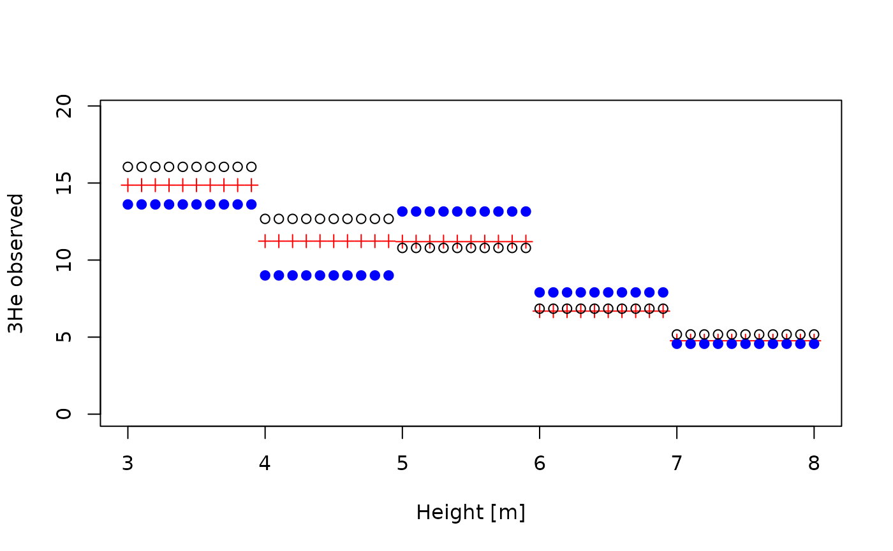
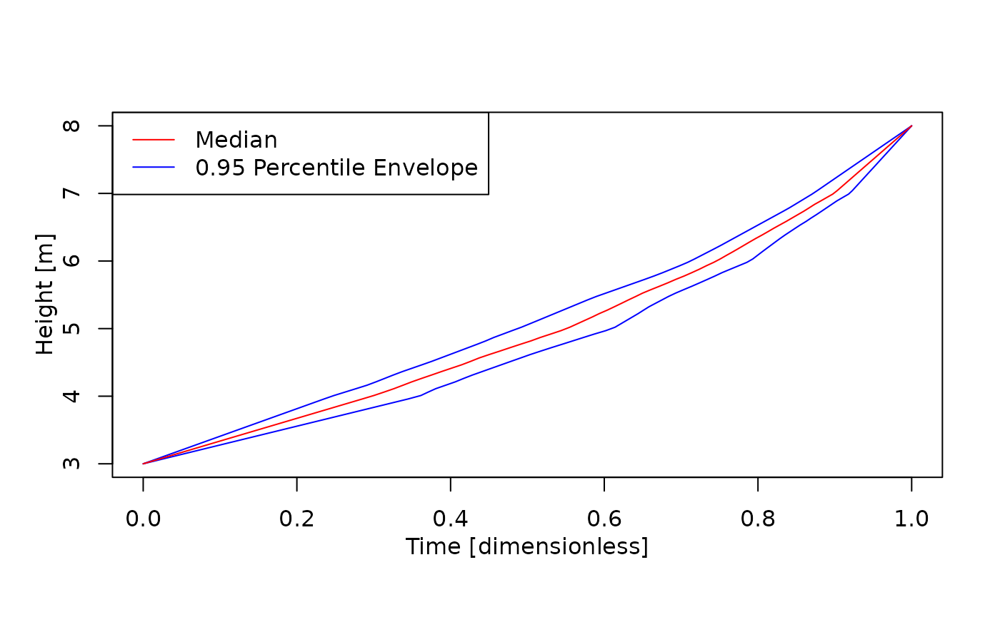

Estimating Age-Depth Models from Tracer Contents of Rocks and Sediments
Niklas Hohmann
Source:vignettes/adm_from_trace_cont.Rmd
adm_from_trace_cont.RmdIntroduction
This vignette gives an example on how to estimate age-depth models
(ADMs) from tracer contents of rocks and sediments using the function
strat_cont_to_multiadm. The function takes the following
inputs:
h_tp: a function that returns stratigraphic height of the tie pointst_tp: a function that returns times of the tie pointsstrat_cont_gen: a function that returns tracer contents observed in the section, outcrop, or drillcoretime_cont_gen: a function that returns how tracer input into the sediment changed with timeh: vector of heights where the ADMs are estimatedno_of_rep: integer, number of age-depth models determined
Idea
Assume there is a tracer embedded in rocks or sediment (e.g. Pollen, extraterrestrial 3He, etc.). In addition, there some information on the temporal variations of the tracer available. Then the tracer values measure in the sediment can be compared to the assumed input flux of the tracer to construct rates of sediment accumulation, from which an age-depth model can be constructed.
A standard example is when tracer input into the sediment is constant. The high tracer values reflect low rates of sediment accumulation, which is equivalent to a low gradient of the age-depth model.
This idea is formalized using the idea of stratigraphic content and time content: Stratigraphic content is the tracer value measured in the section (units tracer per length unit), and time content is the input of tracer into the sediment (units tracer per time unit).
Example
We construct a floating age-depth model for a section of 5 m thickness from measurements of extraterrestrial 3He based on the assumption that 3He flux is constant with time.
Data
We start by defining the section, the sampling bins, and the measurements of 3He:
h_min = 3 # bottom of section
h_max = 8 # top of section
sampling_bin_borders = seq(h_min, h_max, by = 1) # limits of sampling bins
mean_3He = seq(from = 15, to = 5, length.out = length(sampling_bin_borders) - 1) # assumed 3He mean vals
sd_3He = runif(n = length(mean_3He), min = 0.1 * mean_3He, max = 0.2 * mean_3He) # standard deviation of 3He
He_measurements = data.frame("mean" = mean_3He, "sd" = sd_3He)We want to know the age every 10 cm, so we define
h = seq(h_min, h_max, by = 0.1)
T_unit = "dimensionless"
L_unit = "m"Tie points
The tie points in height are deterministic and defined using the
function tp_height_det:
tp_height = tp_height_det(heights = c(h_min, h_max))We use the function tp_time_floating_scale to define the
time tie points for the floating time scale
tp_time = tp_time_floating_scale()This introduces an auxiliary time scale where the bottom of the section corresponds to time 0 and the top to time 1, which allows to examine the relative distribution of time within the section.
Tracer values
To define the assumption of constant 3He flux in time, we use the
function flux_const:
flux = flux_const()The observations of 3He are put into a machine-readable format using
the function strat_cont_gen_from_tracer:
observed_tracer = strat_cont_gen_from_tracer(bin_borders = sampling_bin_borders,
df = He_measurements,
distribution = "normal")Because the 3He measurements are uncertain, values returned from
observed_tracer will differ every time the function is
evaluated. As example, we plot three realizations of the tracer values
with depth:

Estimate age depth model
With the tie points, assumptions on flux in time, and observed values of the tracer coded, we can now estimate the age-depth model:
my_adm = strat_cont_to_multiadm(h_tp = tp_height,
t_tp = tp_time,
strat_cont_gen = observed_tracer,
time_cont_gen = flux,
h = h,
T_unit = T_unit,
L_unit = L_unit)
plot(my_adm, mode = "envelope")
T_axis_lab()
L_axis_lab()
make_legend()
You can extract mean, median, and quantile age-depth models using
mean_adm, median_adm and
quantile_adm:
Coding tie points
Background
Times and heights of tie points are coded via the functions
t_tp (timing) and h_tp (height) that take no
inputs. They serve as wrappers around user-defined procedures that
reflect uncertainties around tie points. Every time t_tp
and h_tp are evaluated, they return possible values for the
tie points. Conceptually, both t_tpand h_tp
are user implemented random number generators that draw from the
distributions of tie points. Writing these functions requires some
effort, but it allows the user to hand over arbitrarily complex
uncertainties of the tie points to the
strat_cont_to_multiadm function.
Wrappers
Multiple wrappers are available to simplify coding tie points:
tp_height_detfor specifying deterministic stratigraphic heightstp_time_detfor specifying deterministic time pointstp_time_floating_scaleto encode time tie points for floating time scaletp_time_normfor normally distributed tie points in time
Manually coding tie points
Both t_tp and h_tp must return strictly
ordered numeric vectors of times/heights. This means that it is the
users responsibility to avoid inversions of times/heights.
As an example, I assume the stratigraphic positions of the tie points are known without uncertainty, and are at 10 and 20 m stratigraphic height.
h_min = 10 # stratigraphic height of lower tie point [m]
h_max = 20 # stratigraphic height of upper tie point [m]h_tp is then implemented as follows:
When evaluated, this function returns the stratigraphic positions of the tie points:
h_tp()
#> [1] 10 20Note that the h_tp defined here is a synonym for
h_tp = tp_height_det(c(h_min, h_max)).
For a more complex example, I assume that the timing of the first tie
point follows a normal distribution with mean 0 and standard deviation
0.5. For the second tie point, only maximum and minimum time is
available. Due to the lack of information, I assume a uniform
distribution between the minimum (9) and the maximum (11). This is
implemented as follows in t_tp:
t_tp = function() {
repeat{
# timing first tie point
t1 = rnorm(n = 1, mean = 0, sd = 0.5)
# timing second tie point
t2 = runif(n = 1, min = 9, max = 11)
if (t1 < t2){ # if order is correct, return values
return(c(t1, t2))
}
}
}
t_tp() # evaluating the function returns a random pair of times drawn from the specified distribution
#> [1] 0.8846097 10.4742473Using Myr as time unit, the distribution of times for the tie points is as follows:
Coding tracer data and hypothesis
Background
Mathematically, tracer data and hypothesis are assumed to be stochastic processes. With each iteration of the estimation procedure, a sample path is generated from the stochastic processes. This sample path reflects one possible change of tracer values in the section/time, given our uncertainties of tracer measurements.
Computationally, this is implemented using function factories, which are functions that return functions. A function factory defines a stochastic process, and each function generated by a function factory is a sample path. In turn, returns the value of the sample path at .
Here, function factories are used as complex random number generators: Instead of returning one or multiple random numbers, they return a random function.
Wrappers
Available wrappers are
flux_const: assume constant flux in timeflux_linear: linear change in flux in timeflux_quad: quadratic change in flux in timestrat_cont_gen_from_tracer: use empirical tracer data in stratigraphic domain
Manually coding tracer data and hypothesis
Both stratigraphic contents and time contents must be coded as function factories, i.e., functions that return functions. They must be able to take vector inputs and return a vector of the same length as output, and always return strictly positive values.
For example, assume the tracer input into the sediment is constant with time. This is implemented with the following function:
Note that the inner function is a function of x (time), while the outer function takes no arguments - it simply returns the inner function. To visualize this, let’s plot this from time 0 to 10:
# generate one function from time_cont_gen
time_cont = time_cont_gen()
# time where to evaluate the function
t = seq(0,10,by = 0.1)
plot(x = t,
y = time_cont(t),
type = "l",
xlab = "Time [Myr]",
ylab = "Tracer Input into the Sediment [X/Myr]")This is a lot of effort to code a constant function. The used approach shows its power and versatility when used in more complex situations. For example, assume the tracer was measured at the bottom, middle, and top of the examined section:
At these locations, tracer values measured follow a normal distribution with mean 10, 1, and 8 and standard deviations 1, 0.1, and 0.2.
I assume that between the measured points, tracer values change linearly. With these assumptions and values, the function factory for the tracer can be coded as follows
strat_cont_gen = function(){
# draw sample tracer values from specified distributions
trac_vals = rnorm(n = length(mean_vals),
mean = mean_vals,
sd = sd_vals)
# define function that linearly interpolates between drawn values
strat_cont = approxfun(x = locations,
y = trac_vals,
yleft = trac_vals[1],
yright = trac_vals[3])
return(strat_cont)
}To visualize this, here are 3 possible scenarios of how tracer values change in the section:
n = 3 # number of sampled tracer values
h = seq(h_min, h_max, by = 0.1) # determine tracer values every 0.1 m
plot(NULL,
xlim = c(h_min, h_max),
ylim = c(0, max(mean_vals) +2 * max(sd_vals)),
xlab = "Stratigraphic Height [m]",
ylab = "Measured Tracer [1/m]")
cols = c("red", "blue", "black")
for (i in seq_len(n)){
strat_cont = strat_cont_gen() # draw sample path from stoch process
# draw sample path
lines(x = h,
y = strat_cont(h),
col = cols[i])
}
Further information
For information on estimating age-depth models from sedimentation rates, see
vignette("adm_from_sedrate")For details on plotting ADMs see
For an overview of the structure of the admtools package
and the classes used therein see
vignette("admtools_doc")See also
For a simplified application see
- Jarochowska, E., Nohl, T., Grohganz, M., Hohmann, N., Vandenbroucke, T. R. A., & Munnecke, A. (2020). Reconstructing depositional rates and their effect on paleoenvironmental proxies: The case of the Lau Carbon Isotope Excursion in Gotland, Sweden. Paleoceanography and Paleoclimatology, 35, e2020PA003979. DOI: 10.1029/2020PA003979